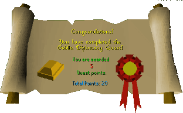

Goblin Diplomacy
Description: There's a disturbance in the goblin village. Help the goblins solve their dispute so the world doesn't have to worry about rioting goblins.Difficulty: Novice
Length: Medium
Items & Skills Needed:
Reward: 5 Quest points, 200 Crafting XP, 1 Gold Bar
Instructions:
To begin the quest, speak with the Bartender at the Rusty Anchor, located in Port Sarim. He tells you that the goblins are about to go to war over the color of their armor.
Walk north from Port Sarim and head into Falador. Walk to the north entrance of Falador, then take the northwest path, continuing north until you reach the Goblin Village.
THE GOBLIN VILLAGE
Talk to General Wartface. He and General Bentnoze immediately start arguing about the color of their armor. Go through all of the speaking options and you will learn that they want you to provide them with orange armor. Kill enough goblins to pick up 3 goblin armors, which are random drops.
AGGIE THE WITCH
Aggie the Witch is located in Draynor Village, just east of Port Sarim. Ask her if she can make red, yellow, and blue dyes for you. She will tell you to collect 3 redberries, 2 onions, and 2 woad leaves.
COLLECT THE DYE INGREDIENTS
Walk back to Port Sarim. There is a food store there — purchase the 3 redberries. Redberries also respawn south of Varrock.
Walk west from the food store. You will come to a path that goes north — follow it until you come to a garden with onions.
Continue north on the path into Falador. Enter the park and talk to Wyson the Gardner. You will have to pay him 20gp to get 2 woad leaves from him in a single conversation.
THE POTIONS
Walk back to Draynor Village and Aggie the Witch. Have her make you a red, yellow, and blue dye. Combine the red and yellow dye to make orange dye.
Use the orange dye on one set of goblin armor and the blue dye on another set. You should now have an orange goblin armor, a blue goblin armor, and an unchanged, brown goblin armor. Walk back to the Goblin Village.
QUEST CONCLUSION
Talk to General Bentnoze a few times to hand over all 3 pieces of armor. You will give him the original goblin armor last, and you will have sorted out their argument.
Congratulations, Quest Complete!

This quest guide was written on RuneHQ by Runegirlie and deathtoyouall. Thanks to Sharqua, Darkest Ange, Nightsdeath, DRAVAN, zus, and Keystone for corrections.
This quest guide was entered into the database on Sun, Apr 11, 2004, at 05:30:14 AM by Keystone and was last updated on Tue, May 18, 2004, at 02:45:25 PM.